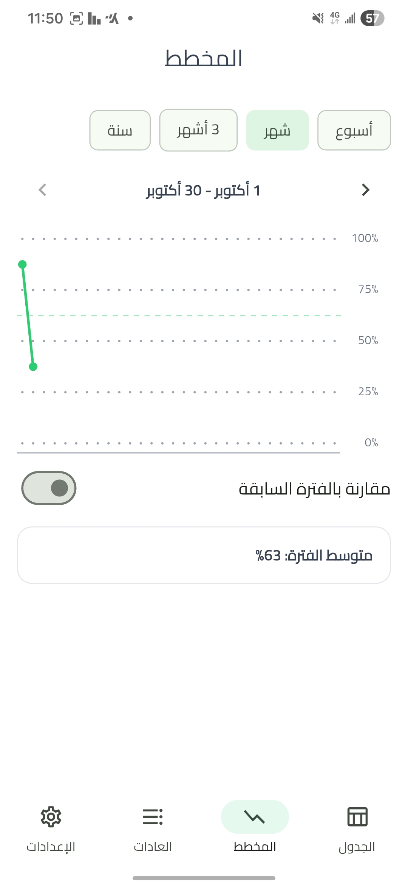
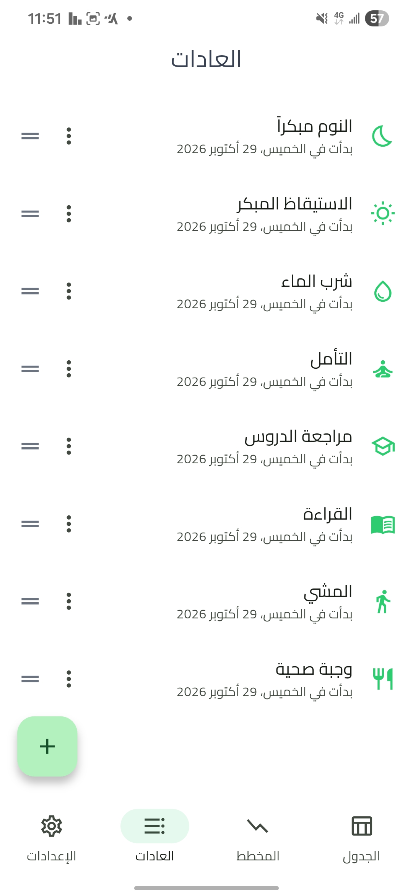
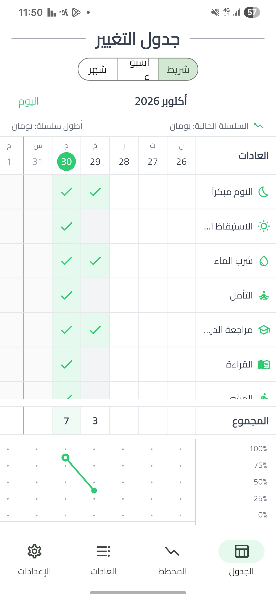

لماذا تغيير؟
ورقة الشهر
جدول أيام وعادات ومجموع ومخطط، تضغط الخلية فتُسجَّل.
مخطط حي
ينمو التزامك أمامك يوماً بيوم، ويتحدث لحظياً.
تذكير لطيف
رسالة مختلفة كل يوم، بلا لوم ولا ضغط.
خصوصية كاملة
بياناتك على جهازك فقط. لا حساب ولا تتبع.
لقطات من التطبيق



طريقة التثبيت
- اضغط زر التحميل أعلاه، وانتظر انتهاء تنزيل الملف.
- افتح الملف من إشعار التنزيل أو من تطبيق الملفات.
- إن ظهرت رسالة "التثبيت من مصدر غير معروف" فاضغط الإعدادات وفعّل السماح لهذا المتصفح، ثم ارجع.
- إن ظهر تحذير Google Play Protect فاضغط مزيد من التفاصيل ثم التثبيت على أي حال.
- افتح التطبيق، واختر 3 عادات، وابدأ.
يظهر التحذير لأن التطبيق جديد وغير منشور في المتجر، وليس لوجود خلل فيه.
عن المبادرة
تغيير مبادرة مجانية غير ربحية بالتعاون مع صانع المحتوى.